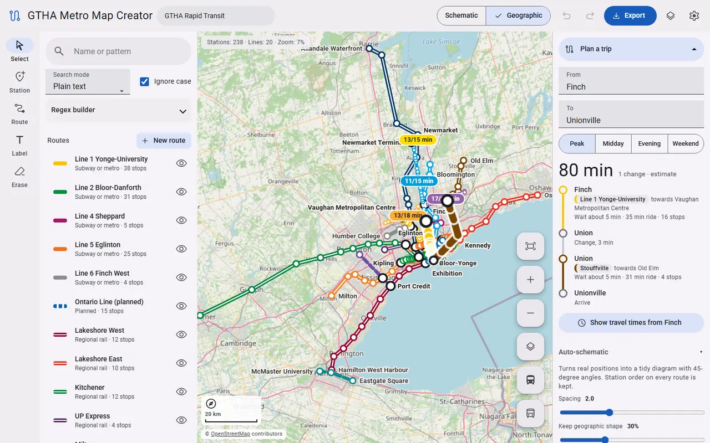

Real geography or a tidy schematic
Draw over OpenStreetMap, then press one button to straighten it into 45-degree lines that keep every station in order.
OpenStreetMap45° auto-schematicShared track
Draw subway, LRT, GO and bus routes on real geography. Plan trips, compare scenarios, see who lives near a station, and publish the map anywhere. It runs in your browser and your map never leaves your computer.

Every screen below is a real capture of the current editor.
Draw over OpenStreetMap, then press one button to straighten it into 45-degree lines that keep every station in order.
Peak, midday, evening and weekend headways, express skip-stops and branches.
Import any agency's feed, read on your computer, or export your plan as a valid feed.
A0 to A4 with title, legend and four map styles. PNG, SVG and a hostable web page too.
Accessible, parking, bike, airport, ferry and bus terminal icons, plus scale bar and north arrow.
Real TTC and YRT vehicle positions over your map in the desktop app.
Command palette, box select, copy and paste, undo history, regex search with a builder.
Bilingual station names and a fully translated interface, in light or dark, with keyboard access and reduced motion respected.
Click the map, or zoom in and click real stops to add them.
Real stops guide →Click stations in order; shared track spreads out side by side.
Line guide →Fastest route with waits from your frequencies, and a travel-time map.
Trips guide →Keep Today and 2031 side by side with a swipe and a change list.
Scenarios guide →People within 400 m and 800 m of every station, from the 2021 Census.
Coverage guide →Bring in real routes, stops and headways from any agency.
GTFS guide →Choose a style and paper size and get a sharp vector PDF.
Print guide →Run the setup wizard and share an address with your household.
Hosting guide →Nothing to install. Your maps are saved in this browser and never uploaded.
Open the editorOne portable file with native open and save, recent maps, and live vehicles.
Latest releaseRun the published container with Docker, or use the setup wizard for one-click hosting on your network.
docker run -d -p 8080:8080 ghcr.io/ding-ding-projects/gtha-metro-map-creator:latest